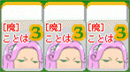
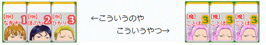
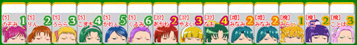
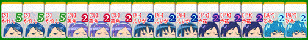

手の作り方
・刻子（コーツ）
同じ牌を３枚集めると刻子になります。
▲刻子の例
・順子（シュンツ）
牌に描かれた番号が連続している３枚の牌（１-２-３とか４-５-６とか）で、３枚とも同じ作品のキャラクターの場合、順子になります。

▲順子の例
※ 無印とMHは同じ作品として扱う
※ Yes!プリキュア５と５GoGo!は同じ作品として扱う
・面子（メンツ）
順子または刻子のことを面子と呼びます。
・上がり形
面子(牌３枚で構成される)が４組と同一牌２個(※)の合計14枚を揃えると上がり形となり、上がることができます。
※･･･この同一牌２個の事を雀頭と呼びます。
▲アガリ形の例
・ロン
対戦相手が捨てた牌を手牌に加えると上がり形が完成する場合、 その牌をもらって上がることが出来ます。これをロンといいます。
・役について
一定の条件を満たして上がると、役をつくることができます。 それぞれの役には、上がりやすさに応じて得点が設定されており、上がった人は役に応じた得点を獲得します。
役の例(一部)
(1) 〇〇(作品名)全員集合！･･･同じ作品のキャラを全て揃える
▲ 「5GoGo!全員集合！」と「まほプリ全員集合！」の複合役
(2) 〇〇キュア一色･･･同じカラーのプリキュアで揃える
▲ 「青キュア一色」